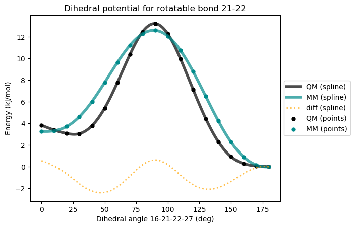
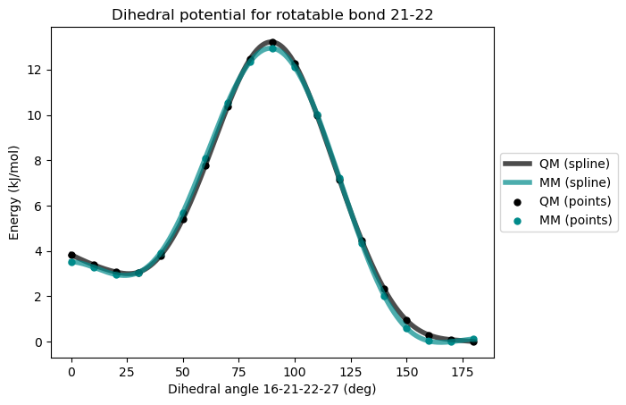

Reparameterize force fields#
The MMForceFieldGenerator class in VeloxChem provides a number of functions to manipulate topology files. As an example, we consider the optimization of the force field parameters for a dihedral angle of a thiophene-based optical ligand named HS-276.
Load the required modules and the equilibrium geometry:
import veloxchem as vlx
import numpy as np
# load B3LYP optimized geometry in the xyz format
molecule = vlx.Molecule.read_xyz_file("../../data/md/hs276.xyz")
molecule.show(atom_indices=True, width=600, height=450)
3Dmol.js failed to load for some reason. Please check your browser console for error messages.
We here consider the dihedral angle between the two thiophene rings, which corresponds to the rotation around bond 21-22.
The dihedral potential curves will be plotted using force field parameters from the general amber forcefield (GAFF) database, as compared to QM results. The force field will then be changed to better fit this potential.
Create the initial force field#
Initialize an MMForceFieldGenerator object and generate initial force field with pre-calculated RESP charges:
resp_chg = np.array([
0.014967, 0.224409, 0.089489, -0.551618, 0.153050, 0.106847, -0.315042,
0.165854, 0.206441, -0.425163, 0.225816, -0.039099, 0.179377, 0.002119,
0.014483, -0.043666, -0.230202, 0.165960, -0.071404, 0.188598, -0.044661,
0.088786, -0.173586, 0.175730, -0.089376, 0.164515, -0.118573, -0.150541,
0.736497, -0.570770, -0.273724, -0.144051, 0.112846, 0.112846, 0.112846
])
ff_gen = vlx.MMForceFieldGenerator()
ff_gen.partial_charges = resp_chg
ff_gen.create_topology(molecule)
* Info * Using GAFF (v2.11) parameters.
Reference: J. Wang, R. M. Wolf, J. W. Caldwell, P. A. Kollman, D. A. Case, J. Comput. Chem. 2004,
25, 1157-1174.
* Info * Updated bond angle 1-9-10 (ca-ca-cc) to 107.217 deg
* Info * Updated bond angle 1-14-15 (ca-na-cc) to 126.641 deg
* Info * Updated bond angle 2-1-14 (ca-ca-na) to 131.687 deg
* Info * Updated bond angle 7-9-10 (ca-ca-cc) to 135.297 deg
* Info * Updated bond angle 9-1-14 (ca-ca-na) to 107.608 deg
* Info * Updated bond angle 14-15-17 (na-cc-cd) to 128.324 deg
* Info * Updated bond angle 19-21-22 (cd-cc-cc) to 129.220 deg
* Info * Updated bond angle 21-22-23 (cc-cc-cd) to 128.571 deg
Reparameterize the force field#
Use the reparameterize_dihedrals method to fit dihedral parameters to QM scan. If you would like to see more output during the fitting, set verbose to True.
ff_gen.reparameterize_dihedrals(rotatable_bond=(21,22),
scan_file="../../data/md/27-22-21-16.xyz",
visualize=True,
verbose=False)
VeloxChem Dihedral Reparameterization
=======================================
* Info * Rotatable bond selected: 21-22
* Info * Dihedrals involved:[[16, 21, 22, 23], [16, 21, 22, 27], [19, 21, 22, 23], [19, 21, 22, 27]]
* Info * Reading QM scan from file...
* Info * ../../data/md/27-22-21-16.xyz
* Info * Performing dihedral scan for MM baseline by excluding the involved dihedral barriers...
---------------------------------------------------------------------------
KeyboardInterrupt Traceback (most recent call last)
Cell In[3], line 1
----> 1 ff_gen.reparameterize_dihedrals(rotatable_bond=(21,22),
2 scan_file="../../data/md/27-22-21-16.xyz",
3 visualize=True,
4 verbose=False)
File ~/miniconda3/envs/echem/lib/python3.12/site-packages/veloxchem/mmforcefieldgenerator.py:600, in MMForceFieldGenerator.reparameterize_dihedrals(self, rotatable_bond, scan_results, scan_file, visualize, fit_extrema, initial_validation, show_diff, verbose)
597 self.ostream.print_blank()
598 self.ostream.flush()
--> 600 initial_data = self.validate_force_field(0, verbose=verbose)
602 qm_energies = np.array(initial_data['qm_scan_kJpermol'])
603 mm_baseline = np.array(initial_data['mm_scan_kJpermol'])
File ~/miniconda3/envs/echem/lib/python3.12/site-packages/veloxchem/mmforcefieldgenerator.py:3138, in MMForceFieldGenerator.validate_force_field(self, i, verbose)
3136 geom = self.scan_geometries[i]
3137 angles = self.scan_dih_angles[i]
-> 3138 mm_scan = self.perform_mm_scan(dih, geom, angles, verbose=verbose)
3139 mm_scan = np.array(mm_scan) - min(mm_scan)
3141 qm_scan = np.array(self.scan_energies[i]) - min(self.scan_energies[i])
File ~/miniconda3/envs/echem/lib/python3.12/site-packages/veloxchem/mmforcefieldgenerator.py:3184, in MMForceFieldGenerator.perform_mm_scan(self, dihedral, geometries, angles, verbose)
3176 for i, (geom, angle) in enumerate(zip(geometries, angles)):
3177 # energy minimization with dihedral constraint
3178 constraints = [
3179 'set dihedral {} {} {} {} {}'.format(dihedral[0] + 1,
3180 dihedral[1] + 1,
3181 dihedral[2] + 1,
3182 dihedral[3] + 1, angle)
3183 ]
-> 3184 pot_energy = self.minimize_mm_energy(geom, constraints)
3185 # convert to kJ/mol
3186 pot_energy *= hartree_in_kjpermol()
File ~/miniconda3/envs/echem/lib/python3.12/site-packages/veloxchem/mmforcefieldgenerator.py:3215, in MMForceFieldGenerator.minimize_mm_energy(self, molecule, constraints)
3213 opt_drv = OptimizationDriver(grad_drv)
3214 opt_drv.constraints = constraints
-> 3215 opt_results = opt_drv.compute(molecule)
3216 final_mol = Molecule.read_xyz_string(opt_results['final_geometry'])
3217 self.ostream.unmute()
File ~/miniconda3/envs/echem/lib/python3.12/site-packages/veloxchem/optimizationdriver.py:380, in OptimizationDriver.compute(self, molecule, *args)
377 with redirect_stdout(StringIO()) as fg_out, redirect_stderr(
378 StringIO()) as fg_err:
379 try:
--> 380 m = geometric.optimize.run_optimizer(
381 customengine=opt_engine,
382 coordsys=self.coordsys,
383 check=self.check_interval,
384 trust=default_trust,
385 tmax=default_tmax,
386 maxiter=self.max_iter,
387 converge=self.conv_flags(),
388 constraints=constr_filename,
389 transition=self.transition,
390 hessian=self.hessian,
391 input=optinp_filename)
392 except geometric.errors.HessianExit:
393 hessian_exit = True
File ~/miniconda3/envs/echem/lib/python3.12/site-packages/geometric/optimize.py:1318, in run_optimizer(**kwargs)
1316 params.xyzout = prefix+"_optim.xyz"
1317 if ic == 0:
-> 1318 progress = Optimize(coords, M, IC, engine, dirname, params)
1319 else:
1320 progress += Optimize(coords, M, IC, engine, dirname, params, print_info=False)
File ~/miniconda3/envs/echem/lib/python3.12/site-packages/geometric/optimize.py:1116, in Optimize(coords, molecule, IC, engine, dirname, params, print_info)
1088 """
1089 Optimize the geometry of a molecule. This function used to contain the whole
1090 optimization loop, which has since been moved to the Optimizer() class;
(...) 1113 A molecule object for opt trajectory and energies
1114 """
1115 optimizer = Optimizer(coords, molecule, IC, engine, dirname, params, print_info)
-> 1116 return optimizer.optimizeGeometry()
File ~/miniconda3/envs/echem/lib/python3.12/site-packages/geometric/optimize.py:1035, in Optimizer.optimizeGeometry(self)
1033 if self.state == OPT_STATE.NEEDS_EVALUATION:
1034 self.calcEnergyForce()
-> 1035 self.evaluateStep()
1036 if self.recalcHess:
1037 # If a Hessian recalculation is needed at this point, we need to
1038 # call calcEnergyForce() which will compute the cartesian Hessian,
1039 # convert it to IC, and then store it.
1040 self.calcEnergyForce()
File ~/miniconda3/envs/echem/lib/python3.12/site-packages/geometric/optimize.py:841, in Optimizer.evaluateStep(self)
839 Quality = del_E/self.expect
840 # The internal coordinate gradient (actually not really used in this function)
--> 841 self.G = self.IC.calcGrad(self.X, self.gradx).flatten()
842 # For transition states, the quality factor decreases in both directions
843 if params.transition and Quality > 1.0:
File ~/miniconda3/envs/echem/lib/python3.12/site-packages/geometric/internal.py:1991, in InternalCoordinates.calcGrad(self, xyz, gradx)
1989 def calcGrad(self, xyz, gradx):
1990 q0 = self.calculate(xyz)
-> 1991 Ginv = self.GInverse(xyz)
1992 Bmat = self.wilsonB(xyz)
1993 # Internal coordinate gradient
1994 # Gq = np.matrix(Ginv)*np.matrix(Bmat)*np.matrix(gradx).T
File ~/miniconda3/envs/echem/lib/python3.12/site-packages/geometric/internal.py:3674, in DelocalizedInternalCoordinates.GInverse(self, xyz)
3673 def GInverse(self, xyz):
-> 3674 return self.GInverse_SVD(xyz)
File ~/miniconda3/envs/echem/lib/python3.12/site-packages/geometric/internal.py:1850, in InternalCoordinates.GInverse_SVD(self, xyz, sqrt, invMW)
1848 G = self.GMatrix(xyz, invMW)
1849 time_G = click()
-> 1850 U, S, VT = np.linalg.svd(G)
1851 time_svd = click()
1852 except np.linalg.LinAlgError:
File ~/miniconda3/envs/echem/lib/python3.12/site-packages/numpy/linalg/linalg.py:1681, in svd(a, full_matrices, compute_uv, hermitian)
1678 gufunc = _umath_linalg.svd_n_s
1680 signature = 'D->DdD' if isComplexType(t) else 'd->ddd'
-> 1681 u, s, vh = gufunc(a, signature=signature, extobj=extobj)
1682 u = u.astype(result_t, copy=False)
1683 s = s.astype(_realType(result_t), copy=False)
KeyboardInterrupt:
It is not uncommon that the existing dihedral terms in the force field are not sufficient to reproduce the QM potential. Here we can try adding more dihedral terms to the force field, and then redo the fitting. In this particular case we would like to lower the MM energy at 0\(^{\circ}\) so that it matches the QM energy better. This corresponds to adding a dihedral term with periodicity 1 and phase 180\(^{\circ}\). The barrier can be set to 0 since it will be fitted.
ff_gen.add_dihedral((16, 21, 22, 27), barrier=0.0, phase=180.0, periodicity=1)
* Info * Added dihedral 16-21-22-27
After adding the dihedral term we can redo the fitting. This time we can skip the initial validation step by setting initial_validation to False, since we already know how the MM potential energy curve looks. We can also set show_diff to True so that the difference between QM and MM energies will be plotted after the fitting.
ff_gen.reparameterize_dihedrals(rotatable_bond=(21,22),
scan_file="../../data/md/27-22-21-16.xyz",
visualize=True,
verbose=False,
initial_validation=False,
show_diff=True)
VeloxChem Dihedral Reparameterization
=====================================
* Info * Rotatable bond selected: 21-22
* Info * Dihedrals involved:[[16, 21, 22, 23], [16, 21, 22, 27], [19, 21, 22, 23], [19, 21, 22, 27]]
* Info * Reading QM scan from file...
* Info * ../../data/md/27-22-21-16.xyz
* Info * Performing dihedral scan for MM baseline by excluding the involved dihedral barriers...
* Info * Target dihedral angle: 16-21-22-27
* Info * Dihedral barriers [1.85974413 1.85974413 0. 1.85974413 1.85974413] will be used as initial guess.
* Info * Fitting the dihedral parameters...
* Info * Optimizing dihedral via least squares fitting...
* Info * New fitted barriers: [1.98197174 1.98197174 1.97103413 1.98197174 1.98197174]
* Info * Validating the fitted force field...
* Info * Summary of validation
* Info * ---------------------
* Info * Maximum difference: 2.368 kJ/mol
* Info * Standard deviation: 0.969 kJ/mol

* Info * Dihedral MM parameters have been reparameterized and updated in the topology.
Now we get better agreement between QM and MM energies. Since the difference between QM and MM is also plotted, we can tell that the MM energies can be brought closer to QM energies by adding one more dihedral term with periodicity 4 and phase 0\(^{\circ}\).
ff_gen.add_dihedral((16, 21, 22, 27), barrier=0.0, phase=0.0, periodicity=4)
* Info * Added dihedral 16-21-22-27
ff_gen.reparameterize_dihedrals(rotatable_bond=(21,22),
scan_file="../../data/md/27-22-21-16.xyz",
visualize=True,
verbose=False,
initial_validation=False)
VeloxChem Dihedral Reparameterization
=====================================
* Info * Rotatable bond selected: 21-22
* Info * Dihedrals involved:[[16, 21, 22, 23], [16, 21, 22, 27], [19, 21, 22, 23], [19, 21, 22, 27]]
* Info * Reading QM scan from file...
* Info * ../../data/md/27-22-21-16.xyz
* Info * Performing dihedral scan for MM baseline by excluding the involved dihedral barriers...
* Info * Target dihedral angle: 16-21-22-27
* Info * Dihedral barriers [1.98197174 1.98197174 1.97103413 0. 1.98197174 1.98197174] will be used as initial guess.
* Info * Fitting the dihedral parameters...
* Info * Optimizing dihedral via least squares fitting...
* Info * New fitted barriers: [2.00263461 2.00263461 1.90578785 1.23978392 2.00263461 2.00263461]
* Info * Validating the fitted force field...
* Info * Summary of validation
* Info * ---------------------
* Info * Maximum difference: 0.344 kJ/mol
* Info * Standard deviation: 0.197 kJ/mol

* Info * Dihedral MM parameters have been reparameterized and updated in the topology.
Save the force field to file#
Use write_gromacs_files or write_openmm_files to write the force field to files.
ff_gen.write_gromacs_files('hs276')